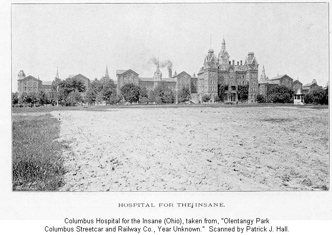
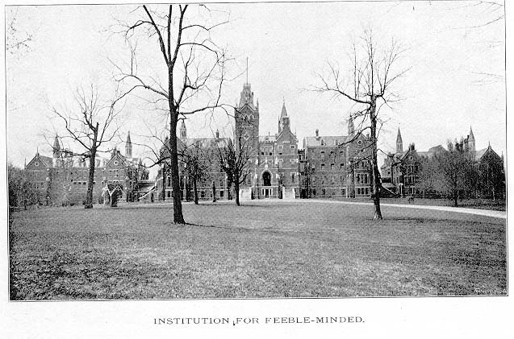

People who lived in Columbus before about 1990 remember the old State Hospital. It was a truly massive building which stood on the north side of West Broad Street at the gateway to the Hilltop. The Psychiatric Hospital System in Columbus was established in 1838, but the main building wasn't built until 1870-1877. It took seven years to build because it was so huge--from some reports I've heard, the biggest building under one roof at the time when it was built. Today, of course, that title goes to the Pentagon. (Incidentally, I've heard this claim made for other Kirkbride-style psych hospitals, so it's probably not true about this one. But it was quite the huge building.)

Over the years, the Columbus Hospital for the Insane was home to some deeply disturbed people. The methods employed there never got very advanced; as late as the 1980s the place was falling apart, paint peeling off the walls, and the cell-like rooms in the basement had been abandoned. When the final occupants left the place stood empty for years, most likely haunted and as cool as abandoned buildings get. Unfortunately, I was only about eleven when they finally demolished it, so I never got the chance to go inside, except when I was visiting my mom when she was hospitalized there for depression right before they shut the place down.

The Ohio Department of Transportation built a new building on the site, a glass-and-steel monster as big as the old asylum was. I wonder if it's haunted.
Now that the asylum is just a memory, the only permanent remnants of the psychiatric complex that once occupied this corner of the Hilltop are the patient cemeteries which dot the area. A couple of them are visible from Interstate 70. According to the records I've seen, there are four cemeteries in all. I've visited three; to take a look at them, click below.
Here's an absolutely fascinating relic from an era with looser standards of journalistic and medical ethics. This is an article from the Columbus Dispatch of Thursday, October 18, 1894--a time when the newspaper would publish the content of a suicide note, for instance, or give a reason like "a romantic quarrel" for a revenge murder. )For an example of the kind of art that can be made from such dark and entrancing history, see Michael Lesy's book Wisconsin Death Trip or the movie made from it by James Marsh.) In this case we're treated to a bizarre conjunction of what's now considered improper openness; not only do the doctors at the State Hospital reveal the details of their patients' various psychoses, but the newspaper actually publishes it as a humorous sidebar about the "vagaries of the mind." As inappropriate as everyone involved would consider such an article now, it represents a rare glimpse of what plagued the minds of the Columbus Asylum's inmates around the turn of the century.
From the Columbus Dispatch
Thursday, October 18, 1894
Page 1
VAGARIES OF THE MIND
Few Samples from the Columbus Hospital
Big Possessions - "Sea of Death" - Ex-Policeman With a Hole in His Head, Etc.
The vagaries of the mind are wonderful, even with sane people, but are still more marvelous where reason is dethroned. The old maxim of "many men of many minds" is true, but how insane people can conceive and ride hobbies, such as they do, surpasses human comprehension. One of the inmates of the Columbus Hospital imagines that she owns the institution and issues her orders accordingly. Another is apparently perfectly sane, except when what he calls the "Sea of Death" is brought up. He contends that the sea of death is 18 inches wide, 150 feet deep and thousands of miles long. No one has ever been able to secure a further explanation than the above.
A former policeman in this city says that he is all right, except his head. When asked for an explanation he says that there is an opening in the top of his head that is filled with flies. When his head shakes a little the flies, he says, swarm out and make that buzzing noise that has so often been produced by boys shaking an empty molasses barrel that has been exposed in the summer.
A few days ago a State official received a note from an inmate seeking him to "find a demurrer to compel the State to pay him a back pension." Of course no attention was paid to the note.
A young man in the city, whose mind has been unsettled for a few days, is the author of the following unique compostion:
"PRESENT AMERICA
"Wanted, gentlemen who are interested in the Artificial Stone Company to call on Jack Terrier, who in connection with H. Rider Haggard made a great hit out of 'She,' which was recently played at perhaps the finest theater in this city. The show was full of realism as well as socialism, but it seemed that the Greek was not properly transplanted, for when the whole affair ended she was supposed to be dead to the world and the Sir Knight proved to be the receipt of a wonderful dagger which can cure all ills that human persons are heir to. Diamonds will not scratch 'She,' nor will the asphalt pavement crackle beneath the rattling beer wagon. Sometimes Champion reapers are heavy enough to crush small, insignificant objects, but as it has been said, 'All quiet along the Potomac to-night.' So the grand would-be aristocrat shall be quiet for a possible feat of intimidation. Telephone 1515.
Mr. Smith, Master."
The Ridges - Athens Mental Health Center
Broadview Developmental Center
Back